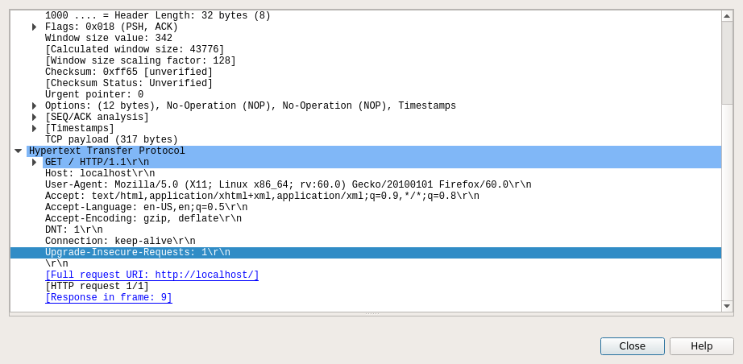
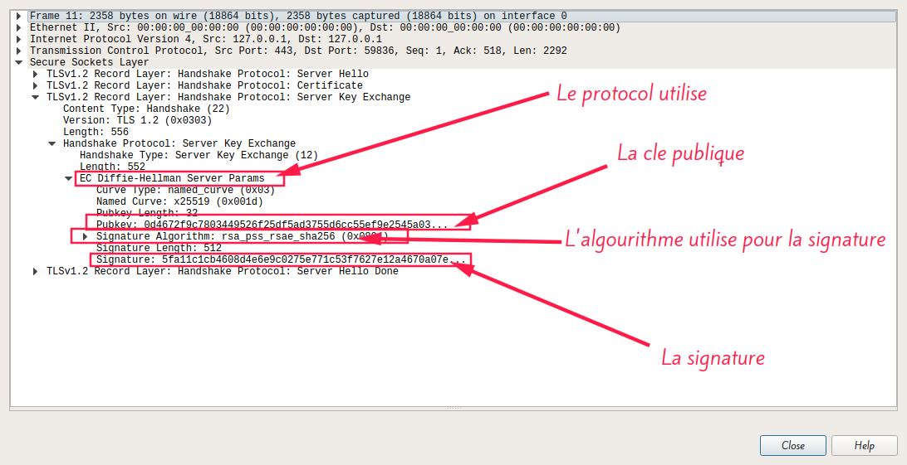
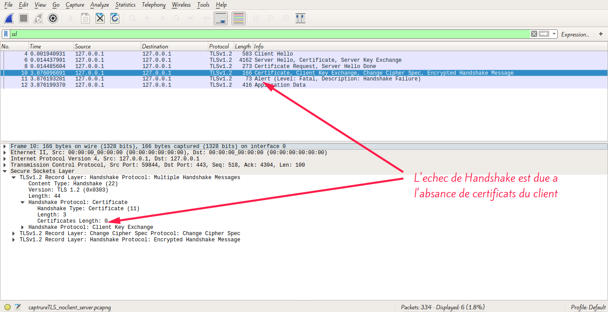
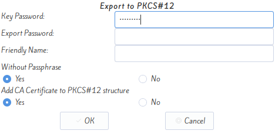
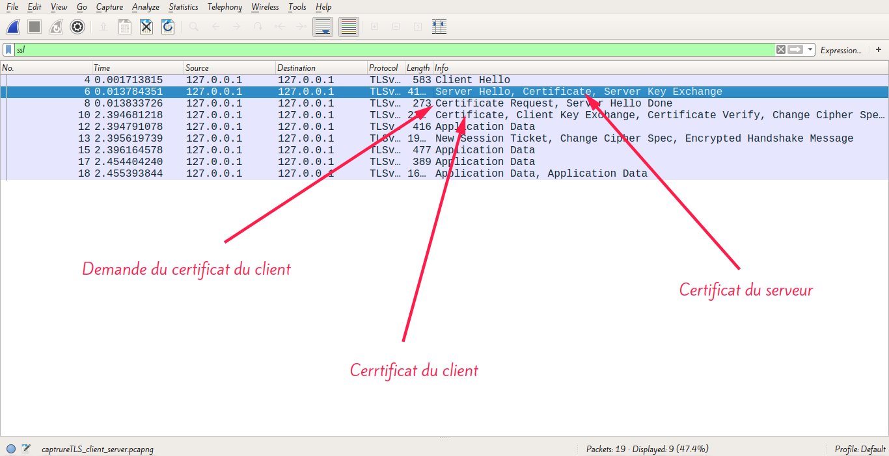

Travail fait par CHEBBAH Mehdi et HAMMAS Ali Cherif
Tableau de Contenue
Tableau de Contenue1. Créer un espace de Publication Web Apache2. Créer un répertoire pour la zone sécurisée3. Créer les certificats et les clés pour la CA et le Serveur Web4. Les tests5. Analyse et comparaison des échangesA. Sans authentification du serveur (HTTP)B. Avec authentification du serveur (HTTPS)6. Ajouter un certificat Client
1. Créer un espace de Publication Web Apache
- Création du répertoire
delta
1> sudo mkdir /opt/lampp/htdocs/delta- Modification du fichier
httpd.conf
xxxxxxxxxx11> sudo nano /opt/lampp/etc/httpd.confLe fichier httpd.conf correspond a la configuration du serveur http.
On fait les modifications suivantes:
xxxxxxxxxx41#DocumentRoot "/opt/lampp/htdocs" 2DocumentRoot "/opt/lampp/htdocs/delta" 3#<Directory "/opt/lampp/htdocs"> 4<Directory "/opt/lampp/htdocs/delta"> - Création du fichier
index.htmlpour le serveurhttp
xxxxxxxxxx11> sudo echo "Hello World, This is HTTP server." > /opt/lampp/htdocs/delta/index.htmlRedémarrage de Apache
xxxxxxxxxx11> sudo /opt/lampp/lampp restartTest
xxxxxxxxxx11> sudo firefox http://localhost
2. Créer un répertoire pour la zone sécurisée
- Création de du répertoire
secure:
xxxxxxxxxx11> sudo mkdir /opt/lampp/htdocs/delta/secure- Modification du fichier
httpd-ssl.conf:
xxxxxxxxxx11> sudo nano /opt/lampp/etc/extra/httpd-ssl.confLe fichier httpd-ssl.conf correspond a la configuration de serveur HTTPS.
On fait les modifications suivantes:
xxxxxxxxxx21#DocumentRoot "/opt/lampp/htdocs" 2DocumentRoot "/opt/lampp/htdocs/delta/secure" - Création du fichier
index.htmlpour le serveurhttps
xxxxxxxxxx11> sudo echo "Hello World, This is a secure HTTP server." > /opt/lampp/htdocs/delta/secure/index.html
3. Créer les certificats et les clés pour la CA et le Serveur Web
- Création du certificat du CA:
On lance tinyca2 par la commande suivante:
xxxxxxxxxx11> sudo tinyca2 On remplie les informations de CA comme suit:

On clique sur OK le résultat est:
- Création des deux répertoires
clesetcertifs
xxxxxxxxxx11> sudo mkdir -p /opt/lampp/etc/delta/cles /opt/lampp/etc/delta/certifs- Création du clé et du certificat de serveur
On clique sur New dans l'angle certificats puis on choisi serveur
On rempli les informations demandés comme suit:

Puis on sera invité a remplir le mot de pass du CA:
puis on clique sur export dans l'angle Keys, on rempli la fenêtre comme suit:

On confirme qu'on voulez importer la clé sans mot de passe:
Un message de sucée va être affiche tout suite.
Puis on clique sur l'angle certificats puis export et on rempli les informations demandés:

Un message de sucée va être affiche tout suite.
- Modification du fichier
httpd-ssl.conf:
On fait les modifications suivantes:
xxxxxxxxxx41#SSLCertificateFile /opt/lampp/etc/ssl.crt/server.crt 2SSLCertificateFile /opt/lampp/etc/delta/certifs/serveurcert.pem 3#SSLCertificateKeyFile /opt/lampp/etc/ssl.key/server.key 4SSLCertificateKeyFile /opt/lampp/etc/delta/cles/serveurkey.pem
4. Les tests
- Redémarrage de
apache:
xxxxxxxxxx11> sudo /opt/lampp/lampp restart- Test:
xxxxxxxxxx11> sudo firefox https://localhostFirefox va demander si on accepte le certificat du serveur


Si on accepte cette certificat la page index.html qu'on a inséré a delta/secure va être chargé mais avec un avertissement indique que la certificat n'est pas sécurisé.


- Exportation du certificat du CA:
On clique sur l'angle CA puis sur export CA puis on choisi l'endroit ou on veut enregistrer le certificat du CA

On ajoute le certificat au navigateur. Pour faire on suit les étapes suivantes:


5. Analyse et comparaison des échanges
A. Sans authentification du serveur (HTTP)
- On remarque que le port utilisé par le serveur est
80et que le protocole utilisé dans la couche transport pour cette session estTCP

- On remarque que les donnes sont envoyé en clair dans la requête
HTTP(Pas de confidentialité)

- On remarque aussi que la repense du serveur n'est pas crypté

- On remarque aussi qu'il n y a pas d'options dans les paquets pour vérifier l’identité du serveur ou du client
En générale la structure de cette session est la suivante

B. Avec authentification du serveur (HTTPS)
On remarque que le port utilisé par le serveur est
443et qu'on a utilise deux protocoles dans la couche transportTCPetTLS
On remarque que les données sont cryptées dans les requêtes
On remarque aussi que les repenses du serveur sont cryptées

On remarque qu'il y a des options dans les paquets
TLSpour vérifier l’identité du serveur ou du client
En générale la structure de cette session est la suivante

Pour le protocole SSL
ClientHello

ServeurHelloCertificatdu serveurServerkeyExchange
ServerHelloDone
Clientkeyexchange
ChangeSipherSpecdu client
Finisheddu clientChangeSipherSpecetFinisheddu serveur
6. Ajouter un certificat Client
- Création du certificat du client
On clique sur New dans l'angle certificats puis on choisi client
On rempli les informations demandés comme suit:

Puis on sera invité a remplir le mot de pass du CA:
puis on clique sur export dans l'angle Keys après avoir sélectionner client, on rempli la fenêtre comme suit:

On confirme qu'on voulez importer la clé sans mot de passe:

Un message de sucée va être affiche tout suite.
Puis on clique sur l'angle certificats puis export après avoir sélectionner client et on rempli les informations demandés:

Un message de sucée va être affiche tout suite.
- Modification de apache pour que le serveur exige un certificat pour le client:
On ouvre le fichier httpd-ssl.conf et on fait le modifications suivantes:
xxxxxxxxxx81#SSLCACertificatePath /opt/lampp/etc/ssl.crt 2#SSLCACertificateFile /opt/lampp/etc/ssl.crt/ca-bundle.crt 3SSLCACertificatePath /opt/lampp/etc/delta/certifs/ 4SSLCACertificateFile /opt/lampp/etc/delta/certifs/My_CA-cacert.pem5#SSLVerifyClient require 6#SSLVerifyDepth 10 7SSLVerifyClient require 8SSLVerifyDepth 2 - Testes
On relance apache
xxxxxxxxxx11> sudo /opt/lampp/lampp restartOn remarque que le client ne peut pas connecter sur le serveur parce que le navigateur ne trouve pas la certificat du client et le serveur demande cette dernier donc le protocole HTTPS génère une alerte au navigateur pour empêcher le client de se connecter au serveur.

Si on analyse cette session on utilisant Wireshark on trouve

- L'ajout de certificat du client dans le navigateur:
Puisque Firefox n'accepte que les certificats des clients qui a l’extension .p12 on est obligé de re-exporter la certificat dans cette format en suivant les étapes:

Puis

Ensuit on ajoute la certificat exportée dans le navigateur pour faire :

On clique sur Import... puis on choisi le certificat de client crée dans l’étape précédente

Une fenêtre demandant le mot de passe va apparaître, on la laisse vide
On remarque qu'une entre va être ajouté a l'angle Your certificats

Puis on clique sur OK
- Testes
On relance apache
xxxxxxxxxx11> sudo /opt/lampp/lampp restartSi on essai d'accéder au serveur via le navigateur on sera invite a choisir une certificats pour être authentifie dans le serveur

Si on clique sur OK, alors on peut accéder au serveur avec toutes sécurité
Dans Wireshark on trouve

On remarque qu'il y a une authentification mutuel entre le serveur et le client
